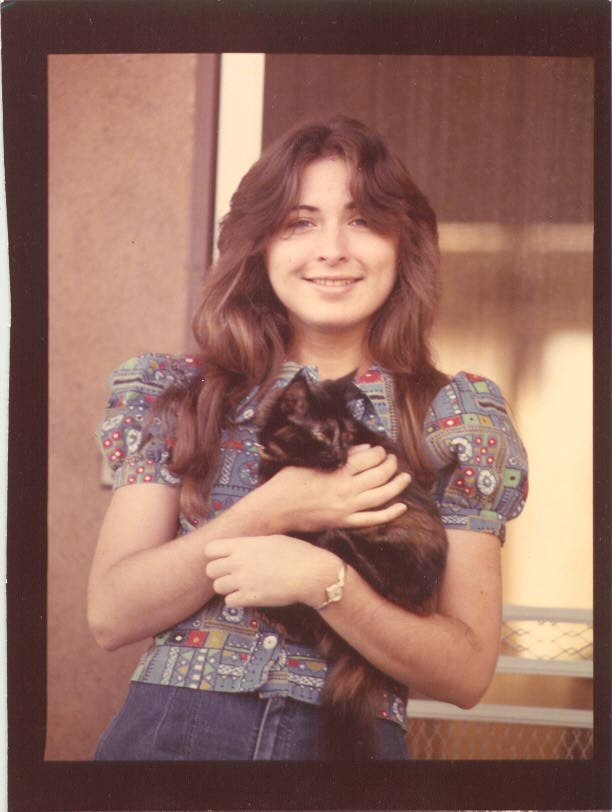
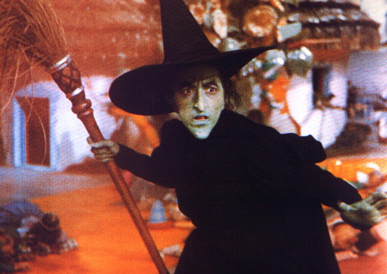

Professor Emerita of Mathematics, Los Angeles Pierce College
|  |  |
|
Mrs. Yoshiwara at your age |
Mrs. Yoshiwara now |
Kathy Yoshiwara was born in Derby in the UK and grew up in Richmond, Virginia. She attended Michigan State University, where she studied Greek and mathematics. She did graduate work at UCLA and earned an MA in mathematics in 1977. She left UCLA in 1979 to join the faculty at Pierce College, where she has been teaching ever since, except for the 1998-1999 academic year, when she taught at Barnsley College in Yorkshire (northern England) on a Fulbright teaching exchange. She is the author or co-author of several mathematics textbooks and is a member of the MAA (Mathematical Association of America) where she currently serves on the Committee for Undergraduate Programs in Mathematics (CUPM). In 1996 she received the Award for Distinguished College or University Teaching of Mathematics from the Southern California Section of the MAA. In November 2003, she won the Teaching Excellence Award for the Western Region from the American Mathematical Association of Two-Year Colleges (AMATYC). She is married to Bruce Yoshiwara and benefits from his expertise in all things mathematical.
CMC3
2010
CMC3-South
2007
AMATYC
2006
AMATYC
2005
AMATYC
2004
AMATYC
2003